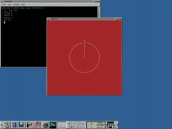
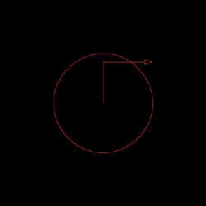

![[ TABLE OF CONTENTS ]](../gx/indexnew.gif)
![[ FRONT PAGE ]](../gx/homenew.gif)


|
 I was in 5th Grade when I took my first computer class in Rio de Janeiro, Brazil. I was going to start taking a course in LOGO running on Commodore 64. Soon enough LOGO was known to us as the "turtle game". LOGO is a programming language developed at the MIT labs in the late-60's, and its main purpose is to make a programming language for children. LOGO has its own syntax and semantics, but what really makes it fun for kids is its Graphical Environment.
LOGO has a "programmable" cursor that draws on the screen whatever
you programmed it to do. That cursor is known as the turtle. |
|

For example: To make a simple
arc or circle use the command arc and the degrees of the
circumference and the radius. To set the color
of the background and of the drawing of the turtle: To clean (=clear) the
screen: |
|---|
|
Today I am 21 years old, and I still like playing around with LOGO. And I will use it to teach my son a little bit about programming and discrete math concepts. Now, my challenge was to find a version of LOGO for Linux. I have been using Linux for about 2 years now, and just a couple of weeks ago I started searching the web for a free version of LOGO for Linux. It took me about 30 minutes, but I was able to find the Berkeley LOGO version, which is really good. It runs in many Unix flavors and works with MS Operating Systems as well. I was able to compile it with Red Hat 5.2 pretty fast and it worked great, but I did encounter several errors with Red Hat 6.0, and i am still trying to figure out some incompatibilities. The Berkeley distribution of LOGO can be downloaded it at: ftp://anarres.cs.berkeley.edu/pub/ucblogo/ The distribution comes with a pretty good user manual, and it has at least 3 different versions available for download. I do encourage any programmers that have children to download LOGO and start having fun with your children, they will have a blast, and you can even take the opportunity to teach them some basic Linux tasks. |